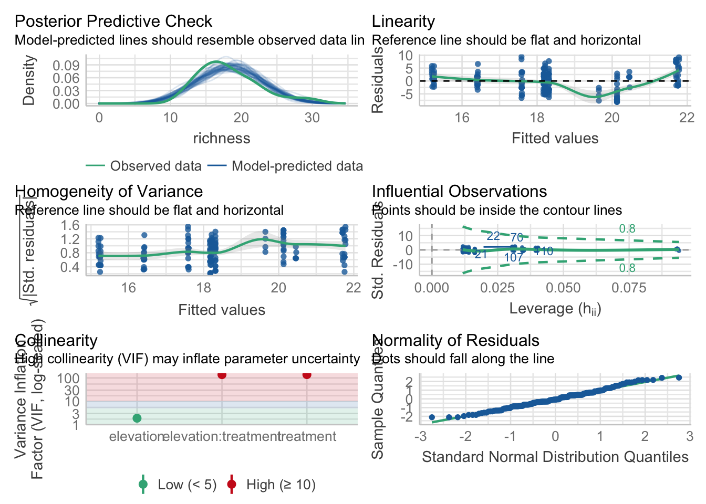

library(dataDownloader)
get_file(node = "gs8u6",
file = "PFTC3-Puna-PFTC5_Peru_2018-2020_CommunityCover_clean.csv",
path = "clean_data",
remote_path = "community")7 Plant community composition data
For this tutorial we will use the follwoing packages: tidyverse, vegan, ggvegan and broom.
7.1 The data
We will use the data from PFTC3 and 5 from Peru.
To download the data use this code:
This dataset contains percentage cover for 143 species along an elevational gradients in Peru. Three different treatments related to fire history: control (C) and burnt (B) plots. For more information about the sites and measurements see here.
To read in the data use the code below. Note that we remove the treatments BB and NB to simplify.
comm <- read_csv("data/PFTC3-Puna-PFTC5_Peru_2018-2020_CommunityCover_clean.csv") |>
dplyr::filter(!treatment %in% c("BB", "NB"))
#> Rows: 3665 Columns: 15
#> ── Column specification ────────────────────────────────────────────────────────
#> Delimiter: ","
#> chr (8): season, month, site, treatment, family, functional_group, taxon, co...
#> dbl (7): year, plot_id, cover, burn_year, elevation, latitude, longitude
#>
#> ℹ Use `spec()` to retrieve the full column specification for this data.
#> ℹ Specify the column types or set `show_col_types = FALSE` to quiet this message.7.2 Diversity indices
One way to quantify biodiversity in a community is to calculate diversity indices. Some common indices are species richness, diversity and evenness. Species richness is the number of species in a dataset. Species diversity (there are many different indices) is a measure of species richness including the abundance of species. And evenness is quantifying how equal in terms of numbers communities are.
To calculate these indices we are using the vegan package. First we group the data by year, month, site, treatment and plot and calculate the indices for each plot.
## Calculate responses
diversity_index <- comm |>
dplyr::group_by(year, month, site, elevation, treatment, plot_id) |>
dplyr::summarise(richness = n(),
diversity = diversity(cover),
evenness = diversity/log(richness)) |>
mutate(treatment = factor(treatment, levels = c("C", "B")))
#> `summarise()` has grouped output by 'year', 'month', 'site', 'elevation',
#> 'treatment'. You can override using the `.groups` argument.We can now test if these diversity indices are different between the sites along the elevational gradient and the treatments. We will use a simple linear regression with diversity index as response and the interaction of elevation and treatment as predictor. Let’s start with species richness:
fit <- lm(richness ~ elevation * treatment, data = diversity_index)
summary(fit)
#>
#> Call:
#> lm(formula = richness ~ elevation * treatment, data = diversity_index)
#>
#> Residuals:
#> Min 1Q Median 3Q Max
#> -8.1286 -2.5898 -0.3141 2.5418 9.4154
#>
#> Coefficients:
#> Estimate Std. Error t value Pr(>|t|)
#> (Intercept) 6.392339 4.908354 1.302 0.1946
#> elevation 0.003209 0.001373 2.337 0.0206 *
#> treatmentB -15.809315 7.121648 -2.220 0.0278 *
#> elevation:treatmentB 0.004804 0.002004 2.397 0.0177 *
#> ---
#> Signif. codes: 0 '***' 0.001 '**' 0.01 '*' 0.05 '.' 0.1 ' ' 1
#>
#> Residual standard error: 3.933 on 166 degrees of freedom
#> Multiple R-squared: 0.1871, Adjusted R-squared: 0.1724
#> F-statistic: 12.73 on 3 and 166 DF, p-value: 1.566e-07The summary output of the regression model shows that there is a significant interaction of elevation and treatment. Species richness increases with elevation and is overall higher in the control treatment, however species richness increases more with elevation in the burnt treatment.
Check model assumptions
Importantly, we have to to check if the model assumptions are met (e.g. normality of residuals, linear relationship, homogeneity of variance, multicollinearity). For this we will use the performance package.
check_model(fit)
The check.model() function visualises nicely these assumptions and explains the pattern that is expected if the assumptions are met. The plots look good, and we can assume the assumptions are met.
7.2.1 Run multiple regression models
If we want to do the same regression for the other indices, we might want to transform the dataset into a long table and then run multiple regressions at the same time.
diversity_index <- diversity_index |>
tidyr::pivot_longer(cols = c(richness:evenness), names_to = "index", values_to = "value") |>
dplyr::mutate(index = factor(index, levels = c("richness", "diversity", "evenness")))We can then test run the same test again for all indices at the same time. For this we will nest() the data by index, and use a map() function to run the model for each index.
To get a useful model summary, we use the tidy() function from the broom pacakge.
diversity_result <- diversity_index |>
dplyr::group_by(index) |>
nest(data = -c(index)) |>
dplyr::mutate(model = map(data, ~lm(value ~ elevation * treatment, data = .x)),
result = map(model, tidy)) |>
unnest(result)
diversity_result |>
select(index, term:p.value) |>
kbl(digits = 2)| index | term | estimate | std.error | statistic | p.value |
|---|---|---|---|---|---|
| richness | (Intercept) | 6.39 | 4.91 | 1.30 | 0.19 |
| richness | elevation | 0.00 | 0.00 | 2.34 | 0.02 |
| richness | treatmentB | -15.81 | 7.12 | -2.22 | 0.03 |
| richness | elevation:treatmentB | 0.00 | 0.00 | 2.40 | 0.02 |
| diversity | (Intercept) | 1.59 | 0.50 | 3.15 | 0.00 |
| diversity | elevation | 0.00 | 0.00 | 0.61 | 0.54 |
| diversity | treatmentB | -0.59 | 0.73 | -0.80 | 0.42 |
| diversity | elevation:treatmentB | 0.00 | 0.00 | 0.84 | 0.40 |
| evenness | (Intercept) | 0.70 | 0.16 | 4.54 | 0.00 |
| evenness | elevation | 0.00 | 0.00 | -0.27 | 0.78 |
| evenness | treatmentB | -0.06 | 0.22 | -0.25 | 0.81 |
| evenness | elevation:treatmentB | 0.00 | 0.00 | 0.23 | 0.82 |
There is no difference in species diversity and evenness with elevation or the treatments.
We can plot the diversity indices across elevation.
diversity_index |>
ggplot(aes(x = elevation, y = value, colour = treatment, fill = treatment)) +
geom_point(alpha = 0.4) +
geom_smooth(method = "lm", formula = "y ~ x", alpha = 0.2) +
scale_colour_manual(name = "Treatment",
labels = c("Control", "Burn"),
values = puna_treatment_colour$colour[1:3]) +
scale_fill_manual(name = "Treatment",
values = puna_treatment_colour$colour[1:3]) +
labs(x = "Elevation m a.s.l", y = "") +
guides(linetype = "none",
fill = "none",
colour = guide_legend(override.aes = list(fill = NA))) +
facet_wrap( ~ index, scales = "free_y") +
theme_bw()Species richness increases with elevation, and more so in the burnt plots. However, there is no change in species diversity or evenness with elevation or treatment.
7.3 Multivariate analysis - NMDS ordination
In addition to univariate descriptor of communities such as diversity indices, we might be interested in the species composition along the elevational gradient.
A common method is non-metric multidimensional scaling (NMDS). A NMDS collapses information from multiple dimensions to a few dimensions. This allows to visualise the data more easily.
An NMDS can be done using the metaMDS() function form the vegan package. First, we make the dataframe wide using pivot_wider() and use the argument values_fill = 0, because there cannot be NAs in the data. For the NMDS we will only need the species table, but not other variables like year, site etc. so we only select the species.
Then we run the NMDS.
cover_fat <- comm |>
dplyr::select(-family, -functional_group, -c(burn_year:course)) |>
tidyr::pivot_wider(names_from = "taxon", values_from = "cover", values_fill = 0)
cover_fat_spp <- cover_fat |>
dplyr::select(-(year:plot_id))
set.seed(32)
NMDS <- metaMDS(cover_fat_spp,
noshare = TRUE,
try = 30,
trace = 0)
fNMDS <- fortify(NMDS) |>
dplyr::filter(score == "sites") |>
dplyr::bind_cols(cover_fat |>
dplyr::select(year:plot_id))When doing an NMDS one has to choose the number of dimensions to show. This can be done by running the NMDS with different dimensions and then plotting this against the stress. A stress values around 0.1 are considered good.
In this case the stress with 2 dimensions is still a bit high, but on the other hand showing 3 dimensions of an NMDS is usually not very useful.
stress <- map(.x = 1:5, ~metaMDS(cover_fat_spp, k = .x)) |>
map_dbl("stress")
tibble(
stress = stress,
dimensions = c(1:5)) |>
ggplot(aes(x = dimensions, y = stress)) +
geom_point()Visualise
The output of an ordination can be visualised.
fortify(fNMDS) |>
mutate(treatment = factor(treatment, levels = c("C", "B")),
site = factor(site, levels = c("WAY", "ACJ", "PIL", "TRE", "QUE", "OCC")),
season = if_else(season == "dry_season",
"Dry season",
"Wet season")) |>
ggplot(aes(x = NMDS1, y = NMDS2, colour = site, shape = treatment)) +
geom_point() +
scale_colour_manual("Site", values = puna_site_colour$colour) +
scale_shape_manual("Treatment", values=c(16, 5)) +
coord_equal() +
facet_wrap(~ season)The NMDS shows that the species plant composition differs among the sites, meaning that there is species turnover along the elevaitonal gradient. However, there seems not to be much difference between the treatments or the season.